Yesterday an AI agent shaped a rubber beam so that squeezing it followed a prescribed force curve, and passed easily. Today the same agent attacks the four weak points of that pass: harder targets, designs that survive manufacturing error, a gradient that goes blind when the structure snaps, and assumptions both solvers shared. Every number below was fixed as a pass rule before any optimisation ran and is graded by an independent solver (CalculiX), not by the optimiser.
What happened, in one paragraph. The harder targets did their job: of three new target curves none passed — the literature plateau H1 missed (8.1 % error against 3 % allowed), the two-cell staircase H2 missed (21.7 % against 4 %), and the deliberately impossible H4 was reported as a miss with a proof that no elastic cell can come closer than 39.7 %. Designing for manufacturing error did not help: 58 % of imperfect copies of the "robust" design stay inside tolerance in CalculiX, the same as the ordinary design (58 %); the cause is physical (force grows with the cube of beam thickness). The snap problem turned out to be something other than yesterday's diagnosis: the loading path flips onto a different branch when the design crosses a buckling surface, and the objective jumps there. A new gradient that treats snap points as unknowns is exact (checked to 9e-06) but did not cure the stall by itself; the pre-registered remedy converged from 1 of 11 of yesterday's stalled starts (yesterday's method: 0 of 11). A variant added during the run, which keeps the design a fixed distance away from the buckling surface, converged from 5 of 11 of those starts but from only 1 of 6 fresh ones, and doubling its budget rescued none of its misses — better than yesterday, well short of the 8 of 11 set as the bar. Its designs do have one practical advantage: the one checked ran cleanly on every verifier mesh, where the designs sitting on the buckling surface abort on the coarser ones. Finally, dropping the shared assumptions moves the curves a lot: a real 10 mm deep part is about 10 % softer and an elastic frame 16–17 % softer than the idealised model both solvers used.
Verdict on the trial as pre-registered: the method reports misses as misses (good), the remedy for the snap is partial (bar not met), robust design is a negative result, and yesterday's "verified" designs would not meet their tolerances once the frame is allowed to flex.
One cell is a curved rubber beam between two stiff walls; a stiff block in the middle is pushed down and the force is recorded. The optimiser changes the beam's centre line and its thickness along the span (13 numbers per beam today, 9 yesterday). For the staircase target two cells are stacked, so that one gives way first and the other later.
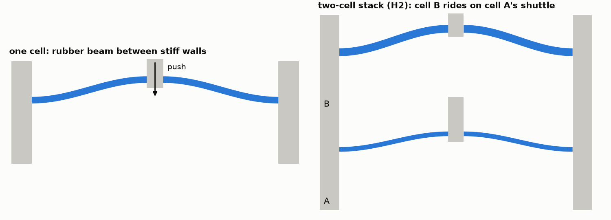
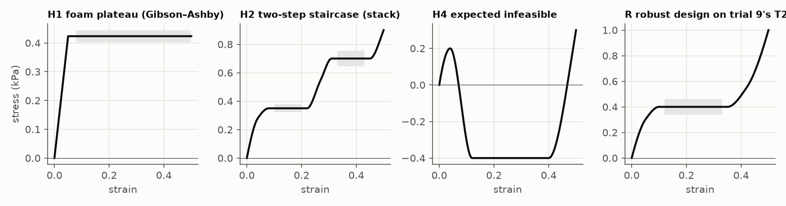
Black = the curve asked for. Grey bars = bands the curve must stay inside. H1's numbers come from the Gibson–Ashby foam formulas (source below). H4 asks for something no elastic object can do, to check that the method reports a miss instead of a pass.
| target | optimiser's own error | CalculiX-verified | tolerance | second criterion | verdict |
|---|---|---|---|---|---|
| H1 — published foam plateau | 8.0 % | 8.1 % (mesh t_min/6) | ≤ 3 % | band 0.08–0.50: off by 0.031 kPa (limit 0.021) | MISS |
| H2 — two-step staircase (two cells) | 21.7 % | 21.7 % (mesh t_min/6) | ≤ 4 % | band 0.10–0.20: off by 0.299 kPa (limit 0.028); band 0.33–0.43: off by 0.276 kPa (limit 0.056) | MISS |
| H4 — expected infeasible | 46.7 % | no completed run | ≤ 5 % | energy floor 39.7 % | FAIL (unverifiable) |
| B — bistable cell (trial 9's target) | largest feature error 0.07 % | largest feature error 0.27 % (mesh t_min/6) | each feature ≤ 5 % | peak force, second position, return barrier | PASS |
| R — robust version of trial 9's plateau | 1.1 % | 1.2 % | ≤ 5 % | share of imperfect copies inside tolerance: 42 % vs 47 % for the nominal design (needed: +15 points) | PASS nominal; no robustness gain |
"Error" is the root-mean-square distance between curve and target as a share of the target's range. The verdict uses the CalculiX column only: a fresh, finer, body-fitted mesh, graded on the finest of three mesh sizes that runs to the end (the rule written down beforehand).
The target is the textbook compression curve of an open-cell rubber foam (Gibson & Ashby): a straight rise to a collapse stress, then a flat plateau. With this rubber and a relative density of 5.5 % the formulas give a plateau of 0.4235 kPa starting at 5 % strain and lasting past 50 %. The rule: error ≤ 3 % of range and the plateau held within ±5 % from 8 % to 50 % strain. Yesterday's cell held a plateau to 3.9 % but only up to 33 % strain, so it was not known whether this one could be met.
It was not. Best of six starts: optimiser error 8.0 %, CalculiX 8.1 % (allowed 3 %); the plateau strays by 0.031 kPa (allowed 0.021). The plateau itself is nearly there (within 7.4 %); the cell cannot make the sharp knee — it is too soft before 5 % strain and overshoots after. All three CalculiX meshes ran to the end and agree to 0.12 %; the two solvers differ by 0.8 %. Every start ran out of its 80 evaluations without reporting a converged optimum, so this is "not reached in the budget", not a proof that the cell cannot do it.
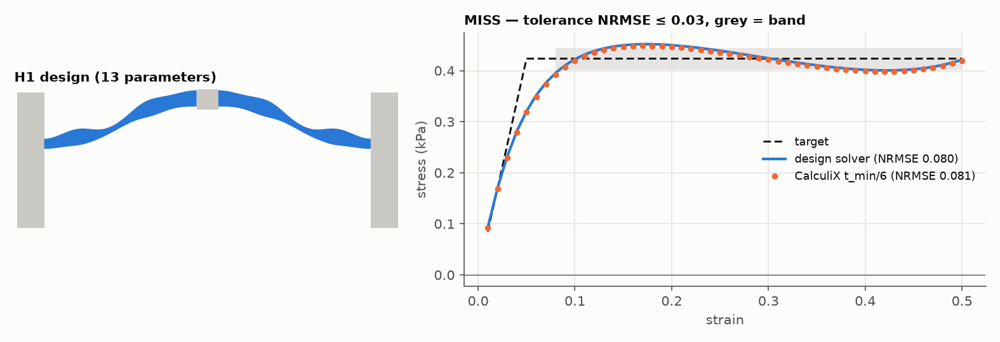
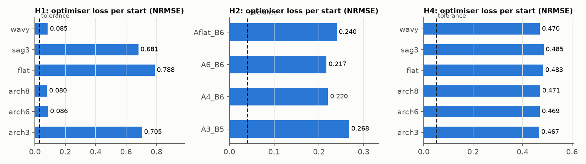
Two cells in series should give a staircase: the softer cell collapses at 0.35 kPa, then the stiffer one at 0.70 kPa. 26 shape numbers, four starts. The two-cell model solved as one system cost 2–3 minutes per evaluation on a busy machine, so the stack was re-formulated as two single-cell solves joined by one equation (equal force, travels add up); that version reproduces the one-system solve to 6e-9 kPa and its gradient matches finite differences to 6e-8.
Missed by a wide margin. Best start: optimiser error 21.7 %, CalculiX (full two-cell model, finest mesh) 21.7 %, allowed 4 %. The steps are off by 0.30 and 0.28 kPa (allowed 0.028 and 0.056). The four starts end between 21.7 % and 26.8 %, all out of budget and still descending slowly. The curve that comes out has two snap-through humps, not two flat steps: each cell's force falls after its peak instead of holding, and in 80 evaluations the optimiser did not find a pair of plateau-type cells that hand over to each other.
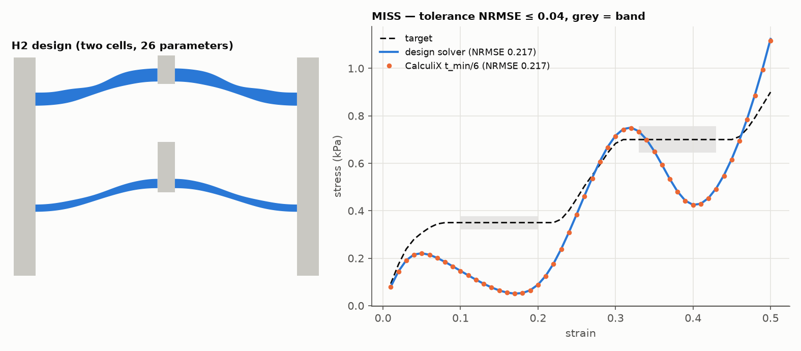
H4 asks the cell to push back for a moment and then pull the plunger down with 0.4 kPa over most of the stroke. Adding up force times distance, the cell would hold less elastic energy than at rest — impossible for any elastic object. This was written into the plan as "expected to miss".
Reported as a miss, three ways. (1) Six starts stall between 46.7 % and 48.5 % error (allowed 5 %). (2) A small quadratic programme finds the closest curve that never needs negative stored energy: 39.7 % away — a floor that holds for every design, not only for this beam. (3) The best design was still sent to CalculiX: all three meshes and both imperfection re-runs stopped at 9.25 mm of 12.5 mm, so by the rule the verdict is FAIL (unverifiable). No number anywhere suggests a pass.
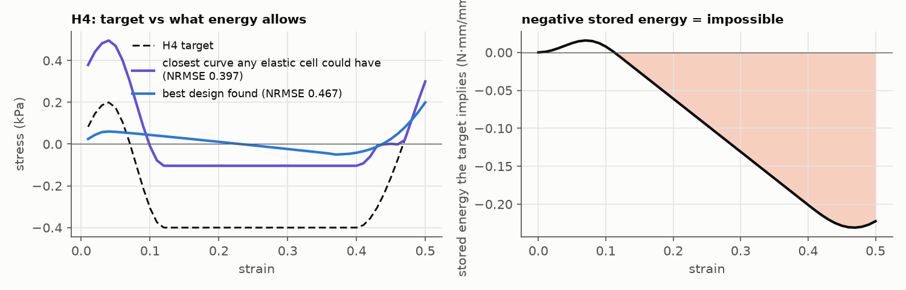
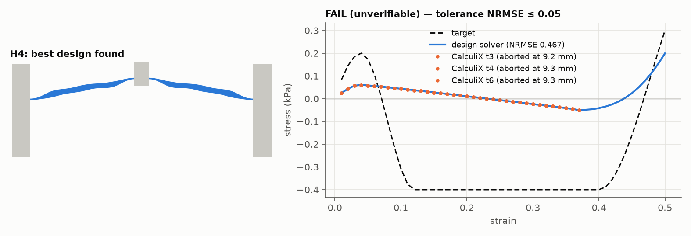
Yesterday's plateau design passed with room to spare, but copies made with ordinary printing error often would not. The error model: each shape mode off by 0.05 mm, overall thickness off by 3 %, thickness profile off by 2 % (one standard deviation each). The robust optimiser minimises the average error over eight imperfect copies plus the perfect one; it is then judged on 64 fresh imperfect copies in the design solver and the first 24 of those in CalculiX. The plan said: claim success only if the share of copies inside tolerance rises by 15 points in both.
It did not rise at all. Design solver: ordinary design 47 %, robust design 42 %. CalculiX: 58 % and 58 % (none of the 48 runs aborted; CalculiX and the design solver agree on pass/fail for 100 % / 100 % of copies). The robust optimiser stopped after 27 evaluations at a genuine optimum, having lowered its own objective from 0.0395 to 0.0384 — nothing. Restarting it from four other shapes (not in the plan) gave arch3 0 %, arch6 44 %, arch8 2 %, wavy 44 %.
Why. Perturbing one error source at a time: centre-line error alone leaves 100 % of copies inside tolerance, the 3 % thickness error alone 62 %, the thickness-profile error alone 81 %. Along the whole curve the force scales with thickness to the power 2.96 — a bending beam — so 3 % thickness scatter is 9 % force scatter whatever the shape. Reshaping the same beam cannot fix that; a different mechanism (stretch-dominated members), tighter thickness control, or a calibration step after printing would.
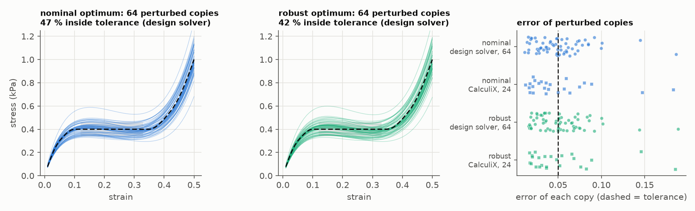
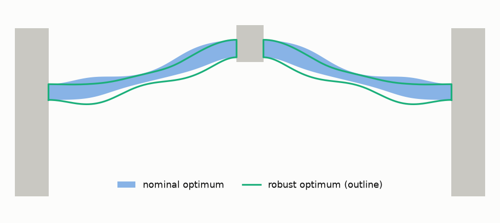
Yesterday five optimisations of a "stays-snapped" cell stalled, and the diagnosis was a secondary snap that the gradient cannot see moving. Checking the new snap-aware gradient against finite differences exposed a different cause. At the stalled design the structure is at a perfect buckling point: just past the force peak there are two possible continuations, and which one the loading path follows flips when one thickness number changes by 0.0001. The return barrier differs by 0.54 % between the two. Yesterday's path-follower also picked between them by round-off, which is what looked like a snap appearing and vanishing. So the objective has a genuine jump along a surface in design space, and the optimiser is drawn onto that surface because removing the imperfection raises the peak force.
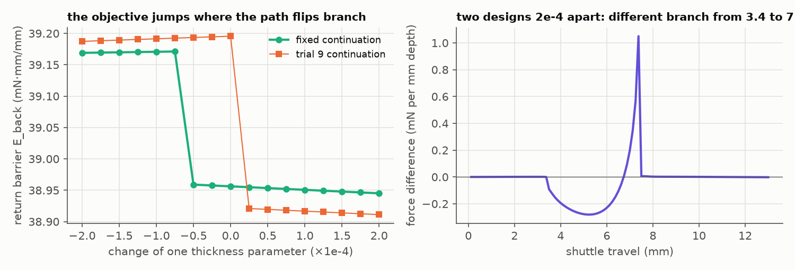
The new gradient. Each snap on the path is solved for as its own unknown (the position where the stiffness becomes singular), and the return barrier is computed from stored energies at the rest states plus the energy lost in each snap, instead of adding up forces across the jump. Its sensitivity uses the textbook limit-point formula. Against finite differences: snap position sensitivity agrees to 9e-06 (6 checks), the whole pipeline re-run from scratch agrees to 9e-06 in 10 probes; the other 7 probes straddle the branch flip, where no derivative exists. Yesterday's gradient had the wrong sign for several parameters at the stalled design.
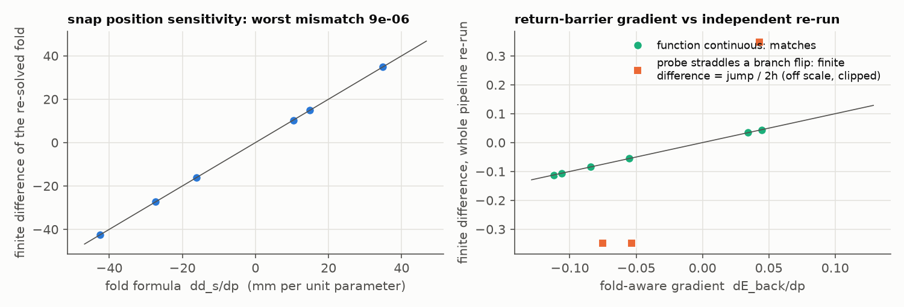
| method | the 11 pre-registered starts | 6 fresh starts | typical evaluations |
|---|---|---|---|
| Trial 9's method exactly as run yesterday | 0 of 11 reach all three targets within 1 % (0 within 5 %) | 0 of 6 (0 within 5 %) | 36 |
| Trial 9's gradient, repaired path-following | 0 of 11 reach all three targets within 1 % (0 within 5 %) | not run | 33 |
| … plus automatic restarts | 0 of 11 reach all three targets within 1 % (0 within 5 %) | not run | 60 |
| New fold-aware gradient | 0 of 11 reach all three targets within 1 % (0 within 5 %) | not run | 36 |
| Fold-aware gradient plus automatic restarts (pre-registered remedy) | 1 of 11 reach all three targets within 1 % (4 within 5 %) | not run | 60 |
| Same, giving up on a stall sooner (added during the run) | 1 of 11 reach all three targets within 1 % (4 within 5 %) | 1 of 6 (2 within 5 %) | 60 |
| Same, plus a margin that keeps the design off the buckling surface (added during the run) | 5 of 11 reach all three targets within 1 % (6 within 5 %) | 1 of 6 (3 within 5 %) | 60 |
| Margin variant with 120 evaluations, only on starts it had missed (added during the run) | 0 of 6 reach all three targets within 1 % (3 within 5 %) | not run | 120 |
Result. The bar written down beforehand was: the remedy converges from at least 8 of the 11 starts where yesterday's method converges from at most 3. Yesterday's method, re-run today: 0 of 11. The pre-registered remedy (fold-aware gradient + automatic restarts): 1 of 11. The bar is not met.
What the runs show: the exact gradient alone (0 of 11) changes little, because the stall is the branch flip, not a moving snap. The restarts do the work — a damped Gauss–Newton step across the jump, accepted even if the error first rises, which automates yesterday's hand fix — but each stall burned ~30 of the 60 evaluations before the optimiser gave up. Two variants were added after seeing this (so their scores on the same starts are not a clean test): giving up on a stall sooner (1 of 11), and adding a penalty that keeps the lowest stiffness eigenvalue along the path above 15 % of its starting value, i.e. keeps the design off the buckling surface (5 of 11). On six fresh starts drawn before those variants were run: margin variant 1 of 6, quick-restart variant 1 of 6, yesterday's method 0 of 6. Given 120 instead of 60 evaluations, the margin variant converged on 0 of the 6 starts it had missed (5 of 11 in total at 120 evaluations).
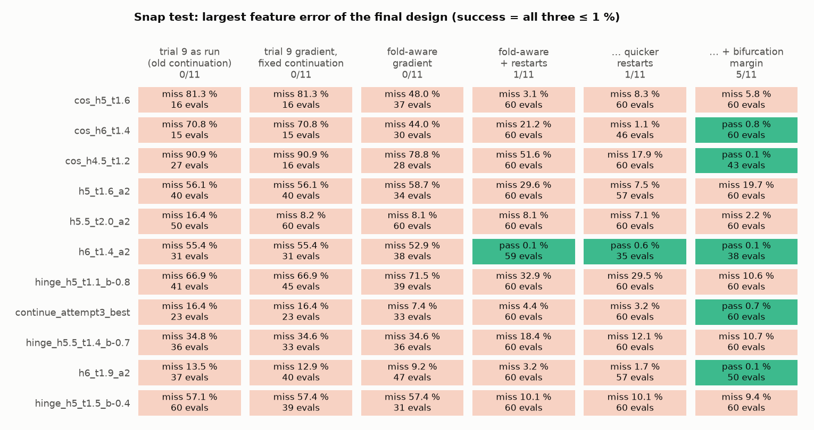
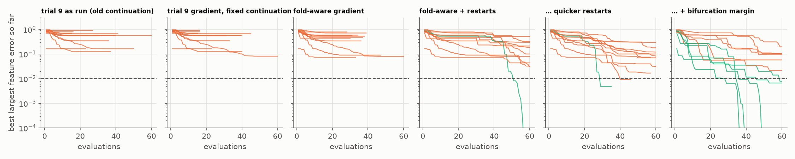
The one design the pre-registered remedy produced (start h6_t1.4_a2): peak force, second rest position and return barrier are off by -0.13 %, +0.01 % and -0.27 % in CalculiX (allowed 5 %): PASS, graded on t_min/6. On record against it: t_min/3 stopped at 4.66 mm; t_min/4 stopped at 4.67 mm — the same kind of abort as yesterday, because this design also sits on the buckling surface (its margin ratio is 0.02).
A design from the margin variant (start cos_h6_t1.4) was verified the same way: t_min/3 completed; t_min/4 completed; t_min/6 completed; verdict PASS, errors -0.64 %, +0.81 %, -0.62 %.
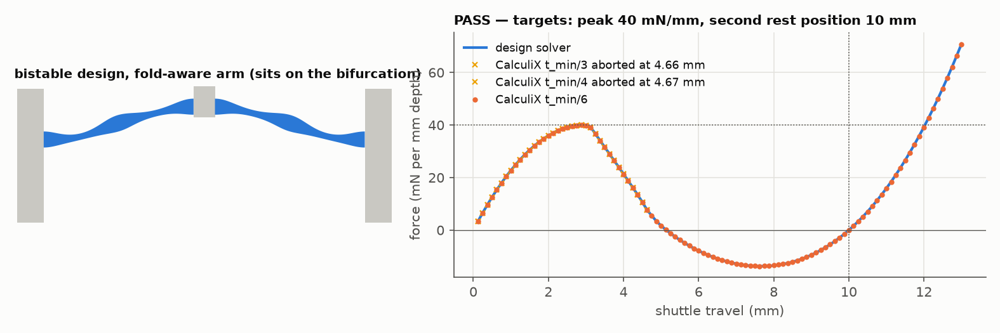
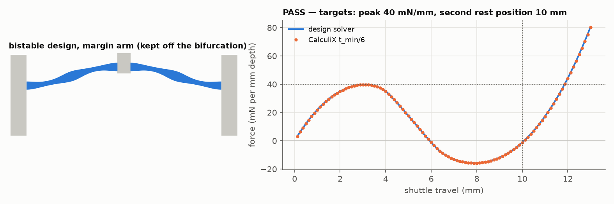
Both solvers assumed an infinitely deep part (plane strain) and perfectly rigid walls. The final designs were re-solved in CalculiX with each assumption dropped in turn: as a 3D body 10 mm deep with free side faces, and with the wall posts and the plunger meshed in the same rubber as the beam (a one-material print). Written down beforehand: 3D forces should fall by 0–16 %.
The curves move by more than the tolerances. 3D: forces × 0.90–0.91 (inside the predicted range), curves shift by 4.6 %–10.8 % of the target range. Elastic frame: forces × 0.83–0.84, curves shift by 10.7 %–19.8 %. Yesterday's plateau design, which passed at 1 % error, sits at 5.0 % in 3D (the 5 % limit) and at 11.8 % with an elastic frame (a miss). An arch pushes outward on its supports, so support stiffness is part of the design, not a detail.
| design | 3D body, 10 mm deep | elastic frame | still inside its tolerance? |
|---|---|---|---|
| H1 foam plateau (a miss to begin with) | curve moves by 10.8 % of the target range; forces × 0.91 | curve moves by 19.8 % of the target range; forces × 0.83 | plane strain (same mesh): no · 3D: no · elastic frame: no |
| Trial 9's plateau design | curve moves by 4.6 % of the target range; forces × 0.90 | curve moves by 11.5 % of the target range; forces × 0.84 | plane strain (same mesh): yes · 3D: yes · elastic frame: no |
| Robust plateau design | curve moves by 4.7 % of the target range; forces × 0.90 | curve moves by 10.7 % of the target range; forces × 0.83 | plane strain (same mesh): yes · 3D: no · elastic frame: no |
| Bistable design (on the buckling surface) | against the target: peak force -15 %, second position -0.5 %, return barrier -18 % | against the target: peak force -8 %, second position +0.7 %, return barrier -11 % | plane strain (same mesh): run aborted · 3D: no · elastic frame: no |
| Bistable design (margin variant) | against the target: peak force -14 %, second position -0.1 %, return barrier -22 % | against the target: peak force -11 %, second position +2.2 %, return barrier -13 % | plane strain (same mesh): yes · 3D: no · elastic frame: no |
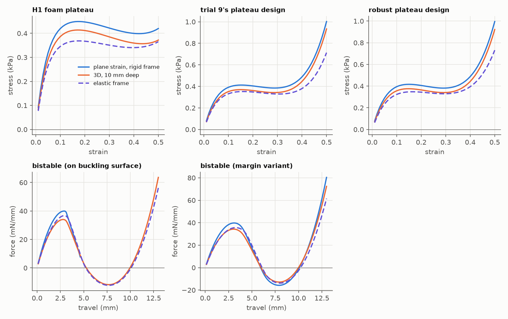
experiments/2026-11-15-metamaterial-inverse-design-hard/ — PREREGISTRATION.md, log.md (chronological, with every stall and miss), metrics.json, results/.